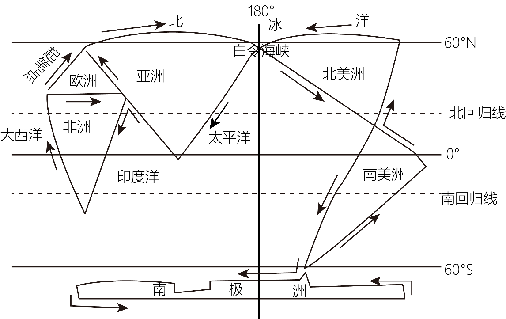
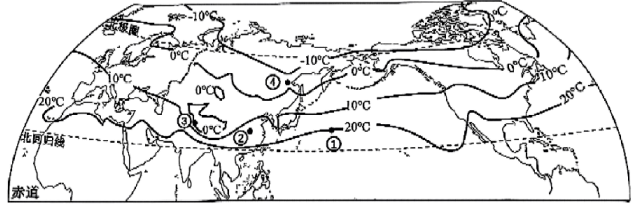
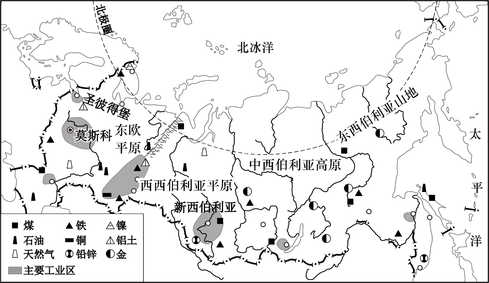

2026年北京平谷区初中学业合格考试地理试卷 · 选择题 第6、7、8、9、10题
某同学通过“一笔画世界”活动学习世界的海陆分布。下图为该同学的作品。读图，完成下面小题。

6. 读作品并结合海陆分布知识可知（ ）
A. 陆地主要集中在北半球B. 南半球的海洋面积比陆地小
C. 地球表面的陆地分为六大洲D. 北半球海洋面积比南半球大
下图为北半球年平均气温分布图。读图，完成下面小题。

7. 图中（ ）
A. 等温线陆地比海洋平直B. 气温自低纬向高纬逐渐降低
C. 海洋气温比陆地气温高D. 年均温最低的区域在北美洲
8. 图中四地气温差异及其主要影响因素的分析，正确的是（ ）
A. ①地高于②地——纬度位置B. ②地高于④地——人类活动
C. ③地低于②地——地形地势D. ④地高于③地——海陆分布
俄罗斯自然资源丰富，种类齐全，是世界上少数几个资源基本自给的国家之一。丰富的自然资源为其工业发展奠定了基础。下图为俄罗斯主要工业区和矿产资源分布图。读图，完成下面小题。

9. 俄罗斯分布较广的地形类型是（ ）
A. 高原B. 平原C. 丘陵D. 山地
10. 俄罗斯工业区多靠近原料产地分布，其主要依托的本地优势是（ ）
A. 气候温暖湿润B. 矿产资源丰富
C. 劳动力充足D. 海运条件优越